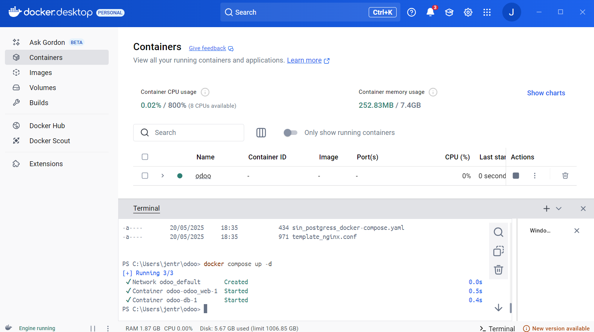
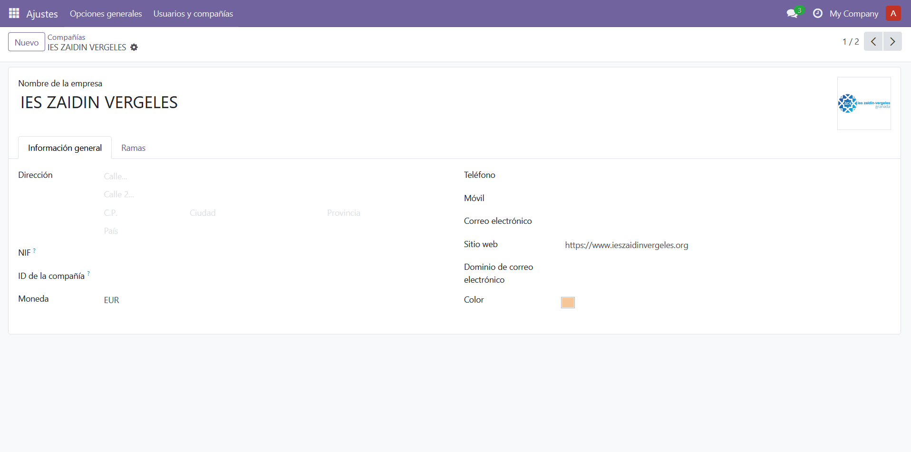
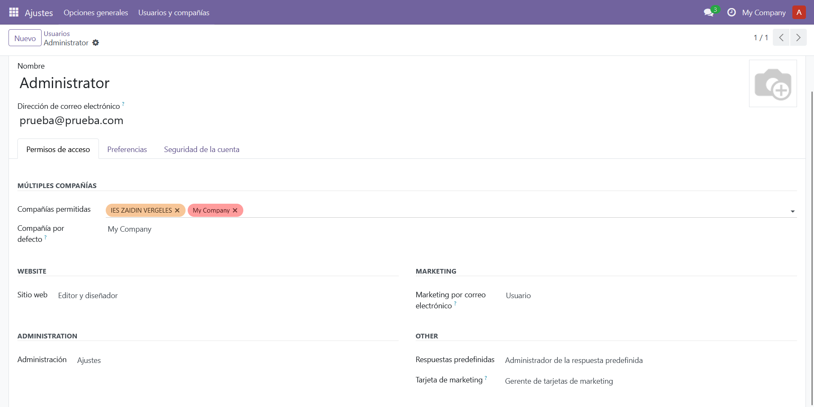
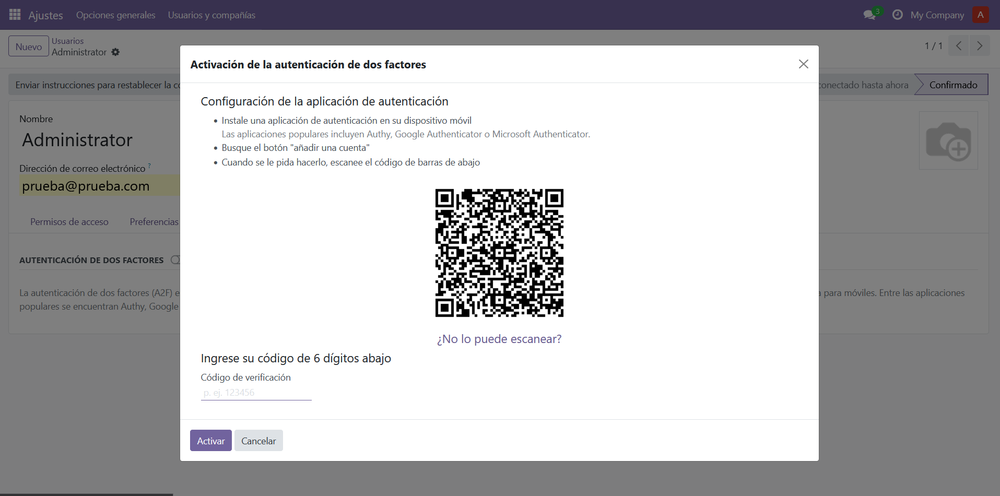

Instalación de Odoo 18 en Docker
-
Paso 1: Instalación de Docker
Instale Docker en su sistema
Instalación en Linux: sudo apt update sudo apt install docker-composeInstalación en Windows 10/11: https://www.docker.com/En la siguiente web tiene más información sobre la instalación: https://hub.docker.com/_/odoo/ -
Paso 2: Implementar Odoo 18 en Docker
Clone el repositorio:
git clone https://github.com/JuanEntrena18/odoo cd odoo
Lanza Docker Compose:
docker compose up -d
Lanza tu servicio:
http://localhost:8069
###IMPORTANTE### El primer password es pass1234 tanto en MASTER como en USUARIO.
Tienes que configurar el archivo odoo.conf con las nuevas contraseñas de uso. -
Paso 3: Securización de la aplicación:
Este es un paso común a todas las instalaciones, vamos a crear la compañía y los usuarios.
En este caso vamos a crear una compañía con el nombre IES Zaidin Vergeles y un par de usuarios.

El servicio crea, de forma genérica un usuario Admin:

Es obligatorio que el Admin tenga activado el doble factor de autentificación:

Es obligatorio que el Admin tenga activado el doble factor de autentificación: